Overview
Combat Fusion – Unreal Engine 5
Combat Fusion – Unreal Engine 5
Build Notes
Implementation of the player’s animation system in Unreal Engine — combining locomotion, jumping, ledge climbing, and attack states through layered state machines, blend poses, and animation notifies to manage seamless transitions and combat logic.
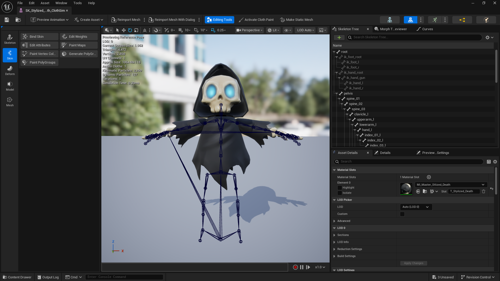
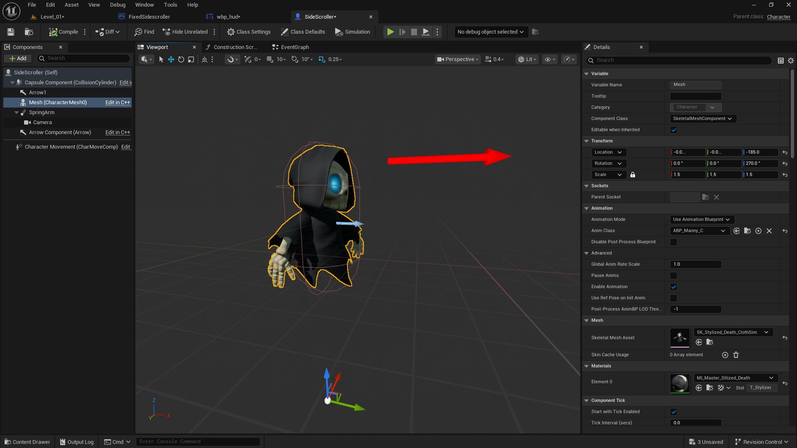
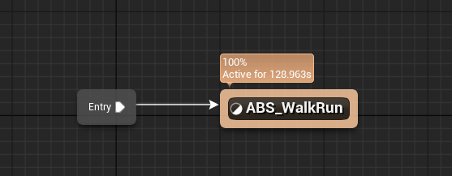
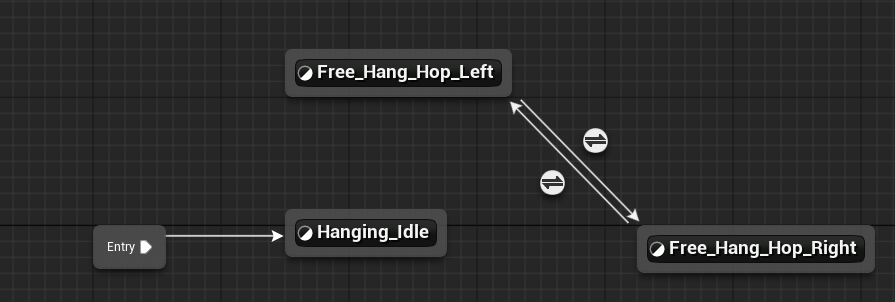
This Blueprint setup enables a gate to rotate clockwise on the first press and anticlockwise on the second press of the ‘R’ key. It uses a FlipFlop node to alternate the rotation direction, a Timeline to control smooth rotation, and Disable/Enable Input nodes with a short delay to prevent repeated triggers during rotation.

Visual breakdown preserved from the original project page.
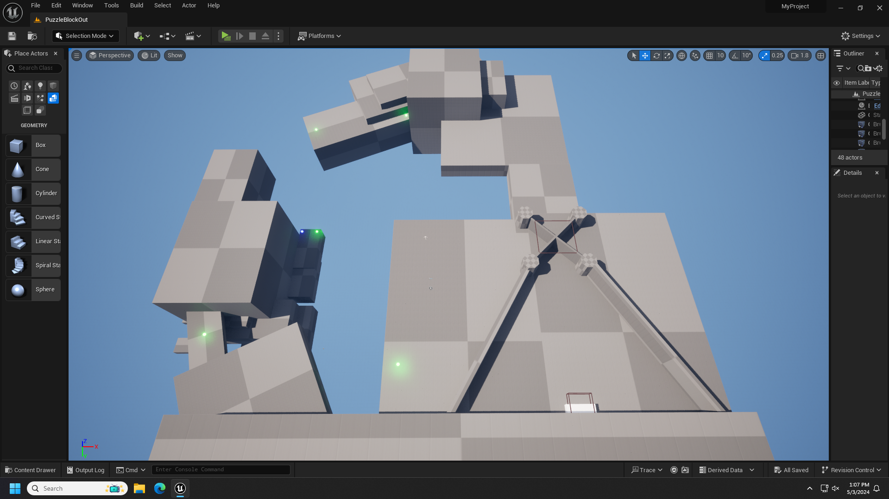


Visual breakdown preserved from the original project page.


I implemented the ledge detection and movement system for the player. The first blueprint setup handles the ledge movement mechanics, allowing the character to move left and right along the ledge while maintaining smooth transitions and correct positioning. Each direction has its own logic flow that updates the player’s location and rotation using interpolation for natural movement. I used multiple capsule and line traces to detect ledges in front of the player and determine the exact height and position of the ledge. Once detected, the system sets the proper ledge height location and aligns the character’s hands and body to match the ledge surface using Fix Char Location and Fix Char Rotation functions. This ensures the character correctly snaps to the ledge and interacts with it realistically during gameplay.


I created a teleport system for the player using Blueprints. When I press the right mouse button, a line trace checks for a valid location in front of the player. If it hits a surface, the player teleports to that point. Before teleporting, I made the mesh invisible and spawned visual effects (Gideon and Meteor effects) to enhance the teleport animation. The teleport movement is smoothly handled using the Move Component To node. Once the teleport ends, I made the mesh visible again, added a short delay, and destroyed the spawned effects to clean up the scene. The system is fully controlled with boolean checks to avoid repeated teleporting during execution.
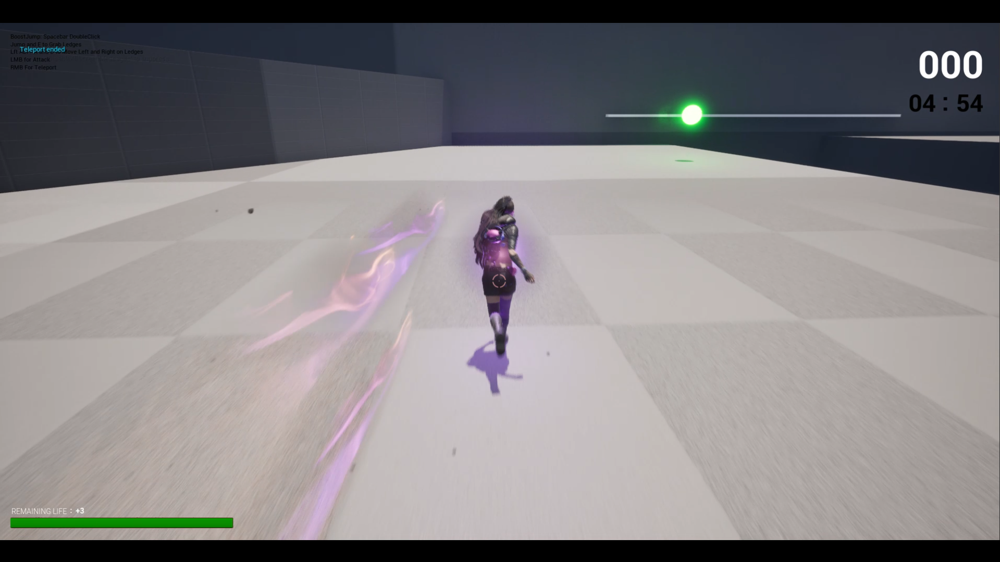
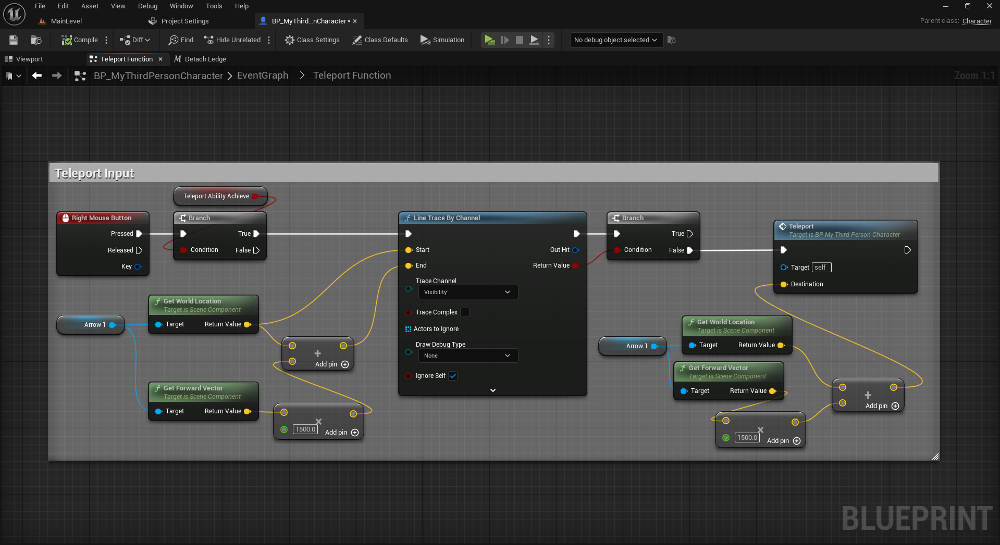
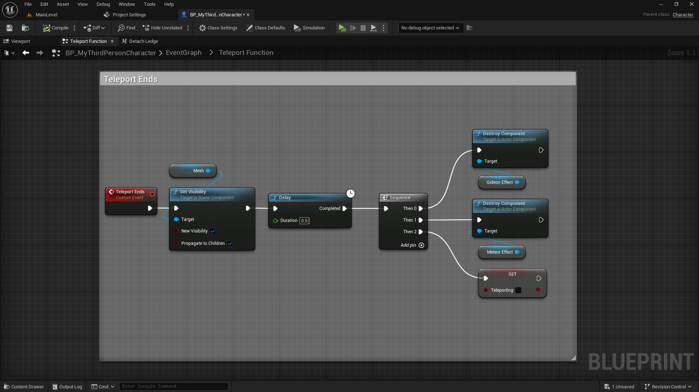
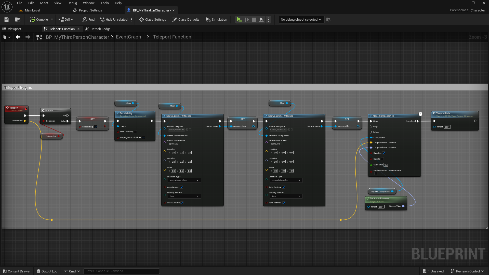
In this setup, I created a Jump and Bounce Jump system that handles both normal and enhanced jumps. When the jump input is triggered, it first checks if the player is attached to a ledge and detaches if needed. Then, the player performs a jump, and a short delay increases the Jump Count. When the player reaches the bounce jump condition, a jump montage plays to visually enhance the motion before applying the launch force. Using the Launch Character node adds extra upward velocity, creating a smooth bounce effect. Finally, when the player lands, the Jump Count resets to maintain consistent jump control.
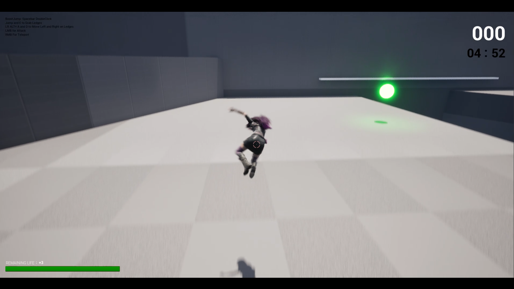
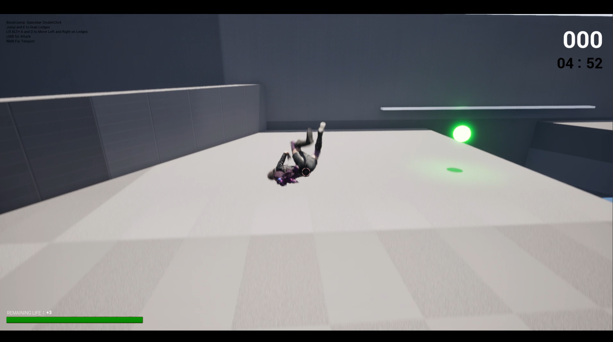
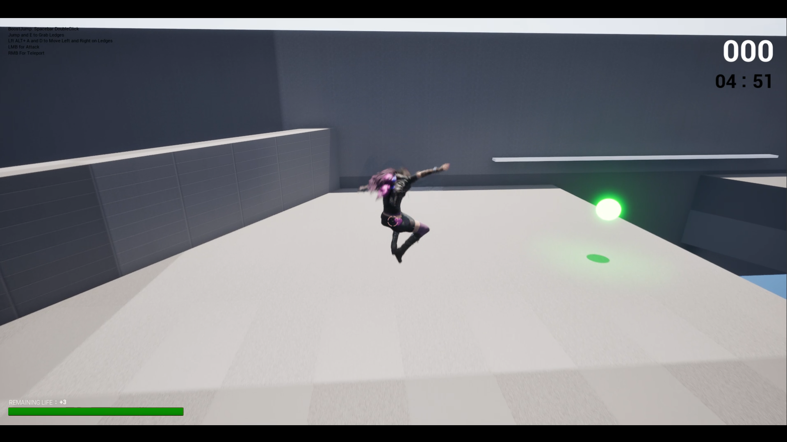
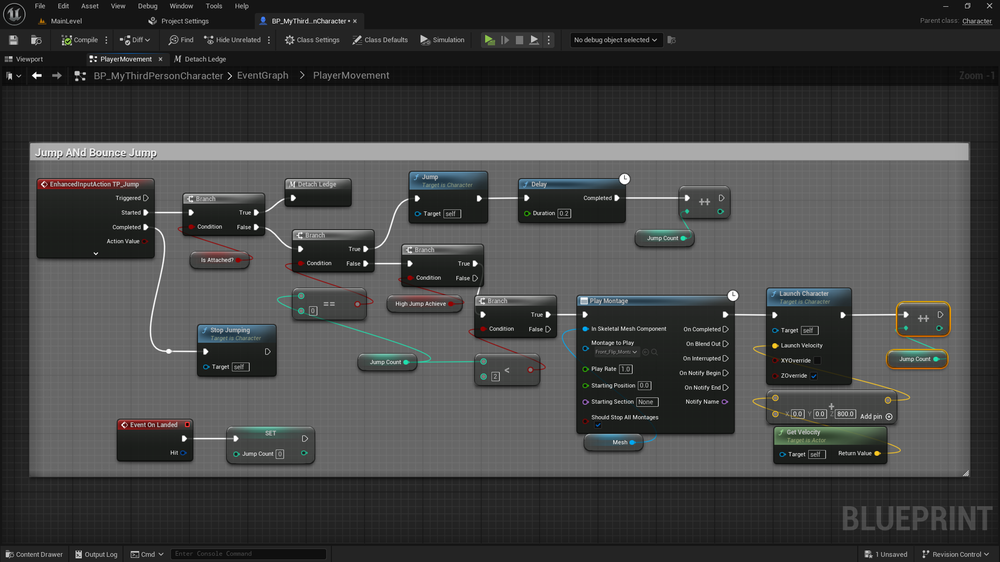
I created the Projectile Attack system for the player character. When the attack input is triggered, it checks if the projectile ability is active and then spawns a projectile in the direction the camera is facing. I used a Line Trace by Channel to get the hit location and calculate the direction from the player’s weapon to the target point. The projectile is spawned using a Transform location and rotation derived from the trace result to ensure accurate aiming. When the projectile hits an actor, it applies damage using the Apply Damage node, plays the impact effect, and triggers a hit reaction on the target. This setup makes the attack feel responsive and accurate, with proper collision and damage feedback on impact.

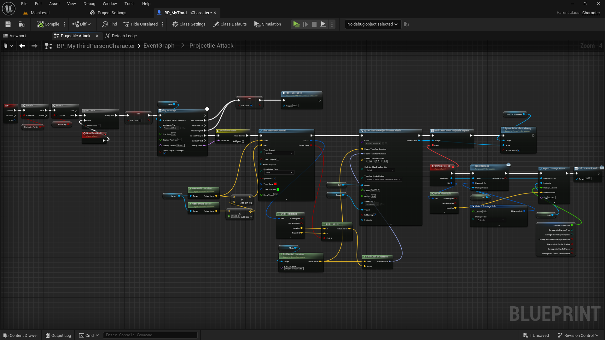
This is my base behavior tree which defines the core AI logic shared by all enemy types. It uses blackboard-based conditions to switch between Frozen, Combat, Investigating, and Patrol (Passive) states. Each state runs its own subtree, allowing enemies to behave dynamically depending on their current state.

The melee enemy’s behavior tree is also derived from the base tree but focuses on close-range combat. In its Attack State, the enemy can equip or unequip its sword, block player attacks, and strafe around the player before attacking. It uses EQS for movement decisions and ensures the sword is unsheathed only during active combat, giving a more realistic melee behavior.

For the ranged enemy, I duplicated the base behavior tree and added more complex logic. In the Attack State, the enemy uses a rifle to attack, can block player attacks, and will run and hide to heal when its health is low. After healing, it returns to combat. The system also includes movement to line of sight, strafing around the player, and dynamic positioning using EQS queries for smarter cover and attack points.